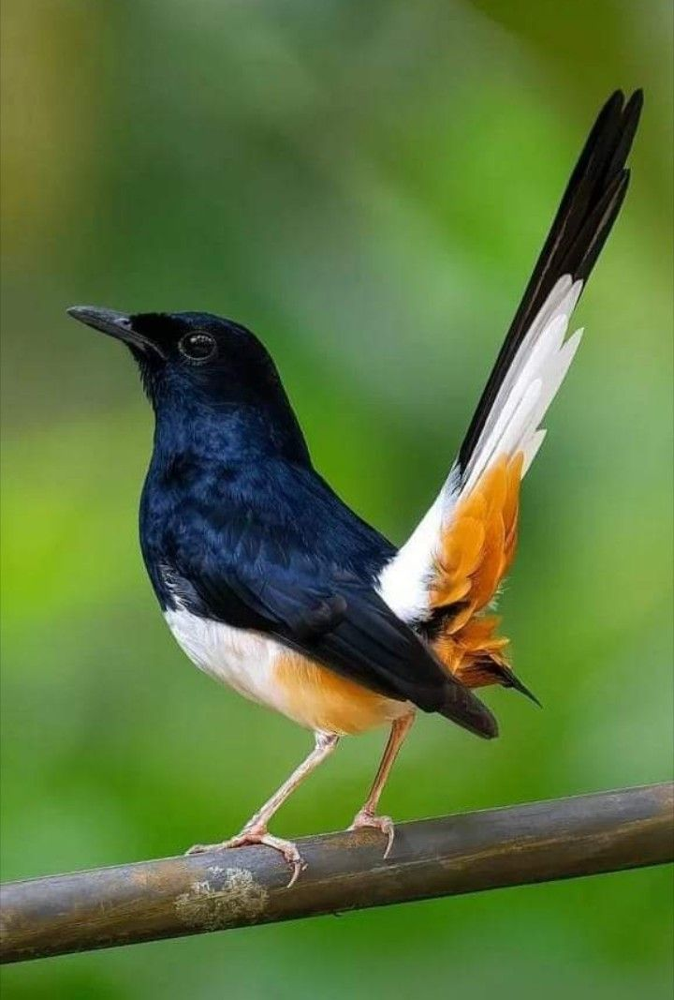

WHO WE ARE
Alpha Bird Farm merupakan usaha yang bergerak di bidang pemeliharaan dan penangkaran burung. Website ini dibuat sebagai media informasi untuk memperkenalkan profil usaha, koleksi burung, produk, serta berbagai aktivitas Alpha Bird Farm.
Melalui website ini, kami ingin memberikan informasi yang mudah diakses oleh pengunjung serta memperkenalkan dunia burung kepada masyarakat luas.
OUR PURPOSE
Menjadi Bird Farm yang dikenal melalui kualitas pemeliharaan, pengelolaan, serta pengembangan usaha burung yang baik.